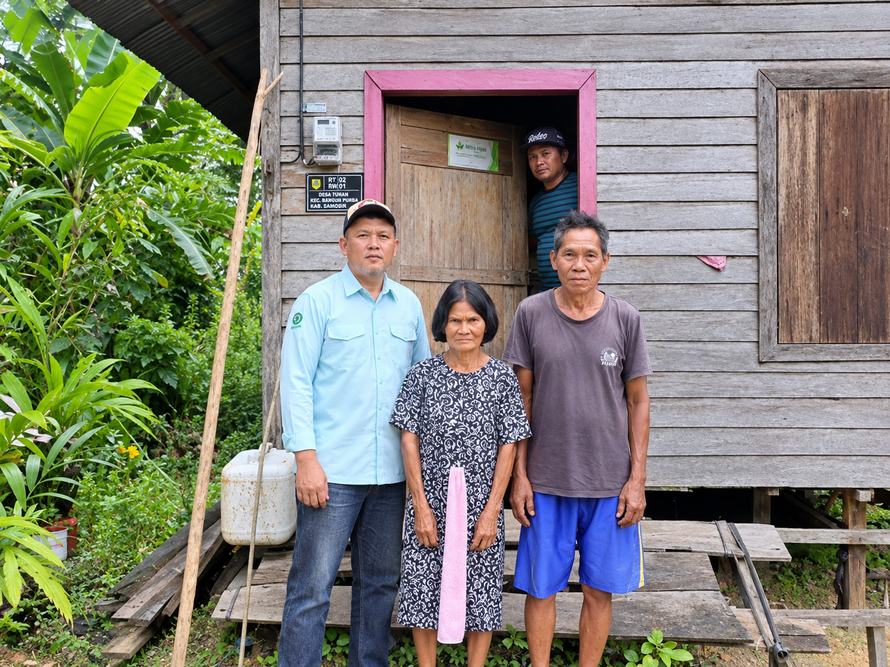

Gunung Mas, Kalimantan Tengah — Sebagai bentuk kepedulian terhadap kebutuhan masyarakat di sekitar wilayah operasional perusahaan, PT Cakra Alam Persada melaksanakan kegiatan Corporate Social Responsibility (CSR) berupa bantuan pemasangan listrik bagi warga Desa Tumbang Danau, Kecamatan Mihing Raya, Kabupaten Gunung Mas, Provinsi Kalimantan Tengah, pada Sabtu, 22 Maret 2025.
Kegiatan ini merupakan wujud perhatian perusahaan terhadap kebutuhan dasar masyarakat, khususnya dalam mendukung akses terhadap energi listrik. Ketersediaan listrik memiliki peran penting dalam menunjang berbagai aktivitas sehari-hari, baik di lingkungan rumah tangga maupun dalam kehidupan sosial masyarakat.
Melalui bantuan pemasangan listrik ini, PT Cakra Alam Persada berharap dapat memberikan manfaat bagi warga Desa Tumbang Danau serta mendukung terciptanya lingkungan tempat tinggal yang lebih nyaman untuk menjalankan aktivitas sehari-hari.
Bagi perusahaan, tanggung jawab sosial tidak hanya berkaitan dengan kegiatan operasional, tetapi juga mencakup kepedulian terhadap kebutuhan dan kesejahteraan masyarakat di sekitar wilayah kerja. Oleh karena itu, keterlibatan perusahaan dalam kegiatan sosial menjadi salah satu bentuk upaya untuk membangun hubungan yang harmonis dan saling mendukung dengan masyarakat setempat.
PT Cakra Alam Persada meyakini bahwa hubungan yang baik antara perusahaan dan masyarakat merupakan bagian penting dalam menciptakan pertumbuhan yang bertanggung jawab. Melalui program CSR, perusahaan berupaya untuk terus menumbuhkan nilai kepedulian, kebersamaan, dan kontribusi positif bagi lingkungan sosial di sekitarnya.
Ke depannya, PT Cakra Alam Persada berharap dapat terus berkontribusi melalui berbagai kegiatan sosial yang memberikan manfaat nyata bagi masyarakat, sejalan dengan komitmen perusahaan untuk tumbuh bersama lingkungan dan komunitas di sekitar wilayah operasionalnya.
PT Cakra Alam Persada — Bertumbuh Bersama Masyarakat.